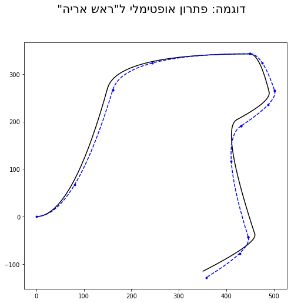

מסלול מרוץ
תרגיל מסכם באופטימיזציה
שחר זיגמן 011862141
אפריל 17 2020
Part 1: Introduction to the problem
The problem
- Find the optimal path and speeds of a race car to complete a race track in minimum time.
- When driving around curves, the car must slow to avoid losing traction.
- The car has limited acceleration and braking ability (e.g cannot go from 50km/h to 250km/h in one second!).
- The car must stay on the pavement.
- Full knowledge of the track ahead is assumed


{kind=link}
{kind=link}
Principle of optimal path
-
Tight curves are slow, so the driver should try to smooth them by starting to turn before the bend in the road, and ending the turn after the bend (path 2 below)
-
Use the maximum possible speed for each segment.
Example tracks
- Each plot below shows a different track's centerline
- These tracks are made up, with reasonable scales and curves for use by "normal cars"

Example solution path
- The blue dotted line represents the car's path
- The deviations are exaggerated for illustration purposes
- As expected, the chosen path "smoothes" the turns

Part 2: Details of geometric representation
Choosing piecewise parabolic segments as the main geometric representation
The geometric representation allows to describe the geometric entities (track's shape, car path's shape), using parameters. These parameters are needed to formulate the optimization problem.
I use parabola segments. This is a simple representation, which can be made C1-continuous. It is useful for representing the track's centerline, as well as the car path's shape.
Recall that a parabola in the plane has 4 parameters. In analytical geometry, a parabola is defined by the (x,y) coordinates of the focus and the 2 parameters describing the directrix (a straight line). However if we "start" with the family of parabolas , by translation and rotation in the plane we can to obtain any parabola (i.e. any focal point and directrix).
Parametric representation of a parabolic segment
List of parameters:
- , the parabola's curvature
- , the amount of shift relative to the origin (offset)
- , the amount of rotation.
- , the "length" of the segment. More accurately, it is the maximum value (before shift and rotation). The minimum x value is always 0.
The parametric equations of the "basic" parabola are
The parametric equations with rotation and shift:
C1 continuity conditions
For a path composed piecewise of segments to be C1 continious, two conditions must hold:
- Each segment (except the first) should start at the end point of the previous
- The direction (derivative) of each segment, at its leftmost point, should math that of the previous, at its rightmost point.
Since the location and rotation in the plane of the track as a whole do not matter, we (arbitrarily) set the first path segment to rotation and translation 0. Each subsequent path's translation and rotation are determined by the two continuity equation relative to the one before. This means that the two vectors and uniquely determine the path.
The equations are as follows:
c0:
c1:
Part 3: Background on physical considerations
1. Traction
For each section of the track, there is an associated parameter μ which represents the traction (i.e. friction between the track and tires). In our problem I assumed μ to be constant for all segments.
The theory of circular motion states that radial Force is given by
On the other hand, the maximum force provided by friction is
Substituting yields
Since our decision variables are the speeds at the knots, we apply two constraints to each of the speed decision variables - one for the segment it just left and one for the segment it is just entering (equivalently we just need to choose the stricter one).
2. Turn radius
The radius of a twice-differentiable curve is given (locally) by
For a parabola the radius at is . We will use this approximation for the radius at the beginning of each segment. The value at the end of the segment is approximated to be 20% larger, . Note that the larger the radius, the faster the car can travel. A straight line has a radius of ∞.
3. Accelaration
The following formula relates the speeds and , at the beginning and end of a segment respectively, with the segment length and the constant acceleration in the segment:
Part 4: Details of the problem formulation
The decision variables
The decision variables should represent the speed of the car and the steering inputs along the path. The state of the car consists of its speed, its orientation (angle of the car's axis with the track's centerline) and its lateral position on the track (distance from track's centerline). Note that if the orientation is known at every point, the the lateral position can be calculated from it.
I made the following design choices:
- The decision variables specify the state at the knots (joints between the parabolic segments). The state within each segment can be inferred by interpolation.
- The initial state (i.e. at the beginning of the first track segment) is predetermined. In other words, the car's speed, position and orientation at the starting point of the track are known (and therefore not optimized). Note that the speed is not zero.
- The car is assumed to have a constant accelaration (i.e. linear speed) and a constant steering angle (turn radius) within each track segment.
- The decision variables represent deviations from a nominal set of speeds and steering inputs.
Therefore, for a track of parabolic segments, a total of decision variables are required. They represent the speeds and lateral position at the end of each segment. They fully represent the turning and engine/brake decisions of the driver.
"Nominal" solution
A nominal solution is one that is both a "default" solution and "good enough" for the given track. For the race track problem, the nominal solution is:
- Set the car's path to the centerline of the track
- Calculate speeds - based on the traction limit for the give path segments, and other considerations (see below).
Once the nominal solution is obtained, the decision variables are defined relative to the nominal as follows:
- The speed at each knot is where is the nominal speed and is the decision variable.
- The lateral position of the car at the knot is , where represents the car being positioned on the centerline, is a deviation towards the left and is a deviation towards the right.
A candidate solution is
Using this representation, . This makes the problem similar in formulation to control problems.
Details of the constraints affecting the nominal solution
-
The speed of the car at the beginning of each track segment, is bounded by .
-
The speed of the car at the end of each track segment is bounded by
-
The difference between two consecute speeds is bounded by an acceleration parameter and a braking parameter (together with the segment's length):
-
The speeds must be below the car's top speed:
-
All speeds are positive.
Algorithm for calculating the nominal solution
- Set .
- repeat step 3 until no change to any
- Take the square root to get
Part 5: the optimization
Optimization process overview
When a problem is given, the code first calculates the nominal solution as described above.
Then, the optimization matrices and are calculated. The optimization is QP (quadratic goal with linear constraints). The solution is calculated using the conjugate gradient method. KKT conditions are used to optimize with constraints. A heuristic is used to determine which boundary (box) constraints are necessary.
Goal
The goal of the optimization is , where is the given segment length and is the averge speed within the segment.
This goal is fairly well approximated for
By
Where
The important thing to note is that this approximation is useful in ensuring a convex objective.
Radial accelaration constraint
The constraint is linearized as follows:
Original expression:
Using and linearizing in and we obtain
Linearized:
is the transformation matrix from the path's geometry decision variables (expressed as deviations from track's centerline) to the change in the curvatures of the 's segment of the car's path.
Bound constraints
The bound constraints on the 's and are:
The are dimensionsless deviations from the nominal speed. The are in units of length (meters).
Each pair of bound constraints is colinear and so cannot be used at the same time. Therefore, the optimization is first carried out with just the radial accelaration constraints. Then, bound constraints are added based on the last optimization run result, until all variables are actively constrained or within their bounds.
Numerical solution process
The problem is quadratic, with linear inequality constraints. This means that the KKT multipliers can be added into the formulation.
A stationary solution vector of the quadratic problem is found by solving the linear system . In my code, I use the conjugate gradient algorithm. Extensive testing showed that even when the problem is not convex, this algorithm finds the correct solution.
I added a small quadratic coefficient to all the decision variables. This induces numerical stability and ensures "perference" for small deviations. The quadratic coefficients are small so they don't affect the solution noticeably.
Solution procedure
- Find the nominal speeds using the nominal speed algorithm described above
- Construct the problem matrices. At this stage they "include" just the objective and the radial accelaration constraints.
- Solve using conjugate gradient method
- Remove any constraint whose KKT multiplier is less than 0.
- repeat Step 4 until all multipliers are positive
- If all and (the speed and path decision variables) are within bounds, return the solution and exit
- Choose one constraint from the ones currently violated. Add it to the problem formulation
- Go back to step 4, repeat this loop until the test in step 6 passes (i.e. a valid solution is obtained)
Part 6: Plotting some results
Example 1

This simple track demonstrates how the optimzation works.
Left: The track (solid black) and the path traced by the car (dashed blue). Note that the optimization "focused" the turn into one segment, and smoothed out the rest of the path
Right: Speed profile. Nominal speed (solid black) and optimal speed enabled by the smoothed path (dashed blue). Note the nominal speed is slower, except at one point where the car performs most of the turning. There are some constraints applied to the nominal speed, which are not implemented for the optimal speed, which also explains why the optimal speed can be higher
Example 2

The mu parameter was increased. due to the added traction, the deviations from the centerline are smaller, while the speed is not limited by radia forces
Example 3

Example 4

This path has a repeating pattern of left turn, straight strech, right turn. The optimization uses the longer straight segment to complete the turn more gradually.
Summary
An optimization problem involving geometric entities and a kinematic problem was solved.
The optimization was formulated as a quadratic programming problem and solved by exploiting KKT conditions.
A "focusing" behavior was observed, where the system "prefers" short sections with sharp turns to allow the rest of the sections to be smoother. The issues of finding the active set and colinear constraints were tackled.